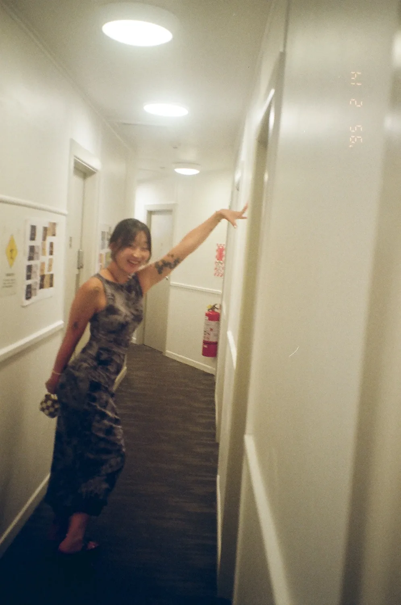
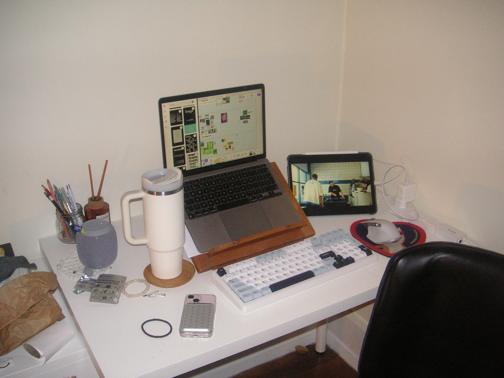

About
I’m an experience designer, digging a little below the obvious. Most of my work starts with a “but why?” — a curiosity for why things are the way they are.
I live somewhere between physical and digital, making things that feel unexpected, intuitive, and a little joyful. Turning ideas into something you can actually feel.


This is where everything is made.